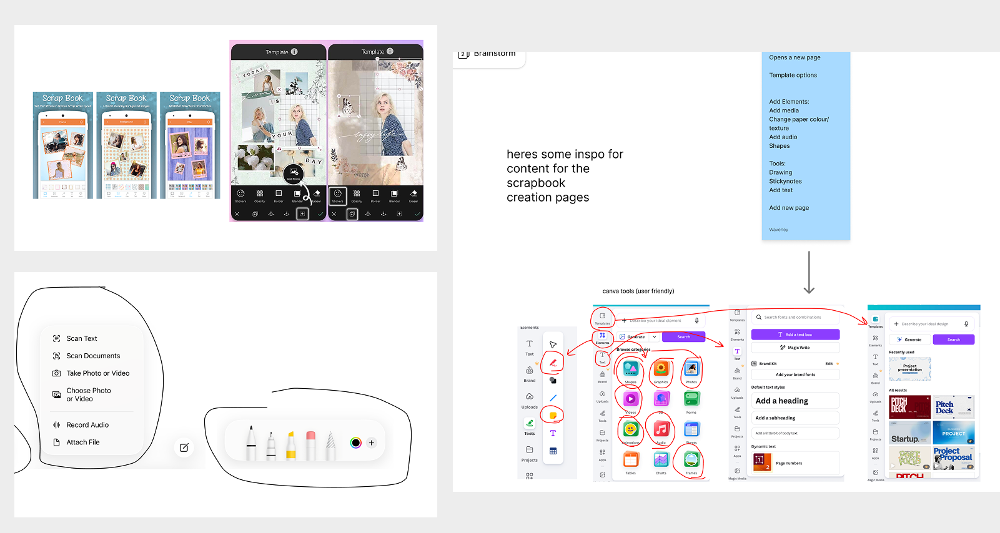

Integrating creation into navigation,
to anchor memories to human
journeys.
[ SPARKJAM 2026 ]
With a brief to design a creation-tool for a non-creative-centric product, our team designed Apple Maps ScrapBooks, a feature that allows users to create digital scrapbooks of their journeys.
** No actual relation to the Apple, this was for a Design Jam **


OVERVIEW
Designing memory into the map
Over six days at SparkJam 2026, a design jam with 300+ participants, our team of four designed Apple Maps ScrapBooks — a feature that lets users build digital scrapbooks of their journeys, anchoring memories to the places they happened, allowing us to take home a prize for Best Community Centred Project.
MISSION
How can we embed a creation tool into Apple Maps so that travellers can capture, preserve, and share their journeys; without adding friction to the experience?
PROBLEM
Travelling is messy

Travellers currently switch between 3-6 apps to plan a single trip.

Existing navigation tools ignore the social side of travel, making it difficult for travellers to collaborate on trips.

People forget the context of their memories, leaving photos to be forgotten in their camera rolls.
SOLUTION
Apple Maps ScrapBooks
A scrapbook layer built directly into Apple Maps, allowing travellers to collaboratively plan trips, capture memories in real time, and revisit journeys through interactive storytelling. This reminds the user not just where they travelled, but how it felt to be there.
MY CONTRIBUTIONS
Below are my contributions to the research & design :)
RESEARCH
Understanding our users
We designed a survey for Gen Z travellers, gaining insight from 35 potential users on how they plan trips and manage trip memorabilia.
Fragmented trip planning
Travellers want a simpler way to plan trips collaboratively. Trip planning is often scattered across platforms, making it overwhelming and difficult to organize.
Scrapbooking requires too much effort.
Travellers want to scrapbook their experiences without the extra effort. Traditional scrapbooking happens after the trip and requires time and organisation that users may no longer have after the trip is over.
Travel memories lose context.
Travellers want to preserve memories in a meaningful way. After a trip, memories become buried in camera rolls and disconnected from places and experiences.
DECISIONS
Mapping the experience end to end
Based on our three research findings, I mapped out user flows for the core features: collaborative trip planning, in-trip memory capture, and post-trip scrapbook viewing. This helped the team align on scope before moving into screens.
Lo-fi prototyping in Apple's design language
I rapidly iterated on lo-fi wireframes following Apple's design styling, utilizing their SF Pro typography, materials, and interaction patterns. We chose Apple Maps due to its interconnectivity within iPhones, hypothetically having this connected to teh users camera roll, music, maps, airdrop, contacts would allow for easy access to a variety of digital content. The decision to prototype this on mobile means users have easy access to build scrapbooks on the go, in the car, on a plane, waiting for the bus, or chilling on the beach.
Simplified ScrapBook Creation Tools
You did the layout and decided on what tools were necessary, could you talk about this process?

Private/Public/friends
Instead of changing ebtween a bunch of apps, users can just explore other peooples scrapbooks to see what adventures different ppl went on and be inspired by those instead of endlesssly scrollig through a bunch of dif. apps. OR you can choose to just keep t private for your viewing only, or share with friends. choose the community you want to share with.
THE PITCH
Research & Inspo
To stay true to Apple's design language, I studied their product launch videos, learning how they present the products solved problem, introduction of the user, and feature solutions using tight pacing, engaging audio, and continuous motion.


Storyboarding
The concept started as a single note: show people spiralling over chaotic trip-planning texts. From there, we storyboarded it into a full narrative arc.


[ Initial storyboard frames 1 & 12 by Sumerah ]


[ Key frame sketches by me ]
Bringing everything together
Scripting the voiceover, layering in sound effects, and refining the typography until everything felt considered and polished.


FINAL
ScrapBooks pitch video
[ Voiced & edited by me ]


[ 1. Team photo w/ our prizes !! ]
[ 2. Our exhibition poster ]
TAKEAWAYS
Teamwork makes the dream work
While I was deep in video production, my teammates were cleaning up prototypes, assets, and the pitch deck. Having clearly defined roles meant nothing missed, and things were finished effectively. Bouncing ideas off each other also accelerated our divergent phase — everyone brought different product references and that range helped us move quickly without getting stuck.
NEXT PROJECT